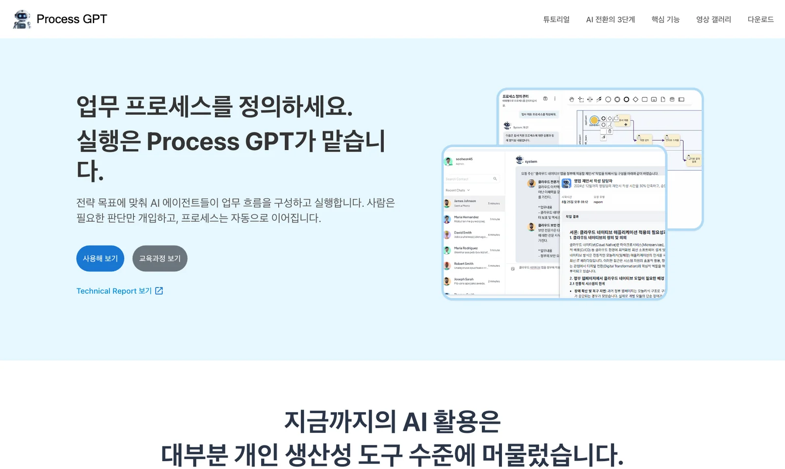
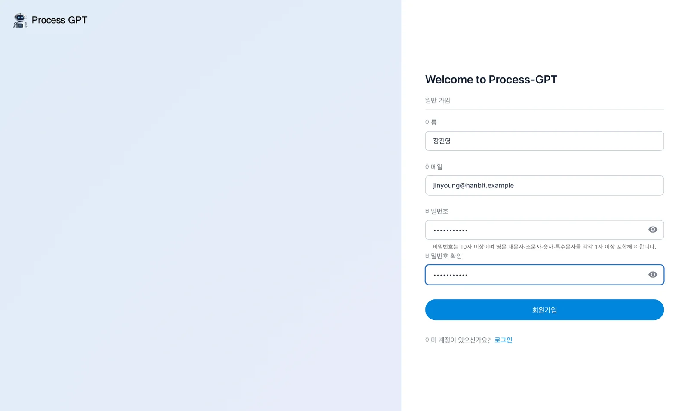
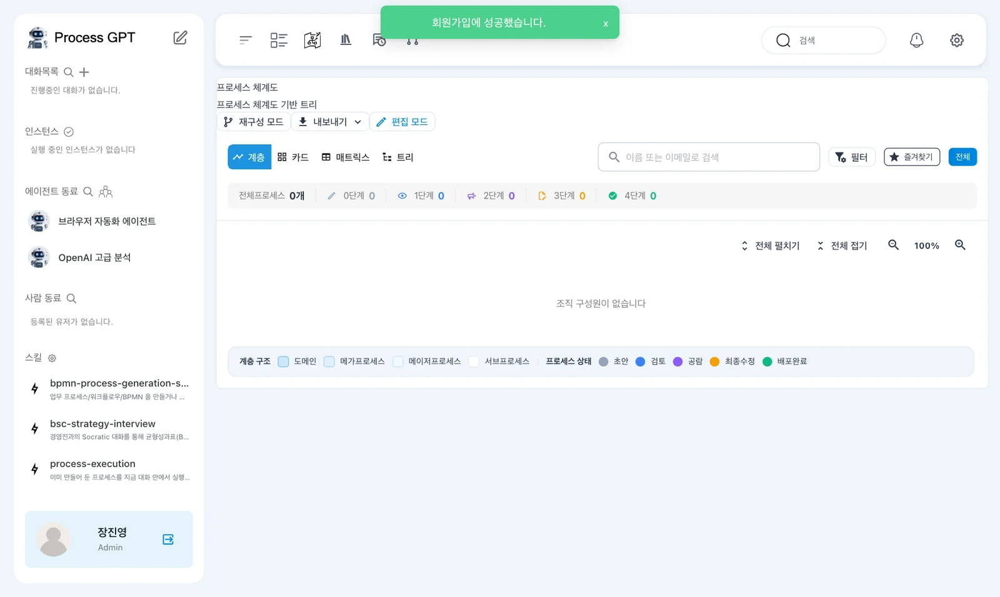
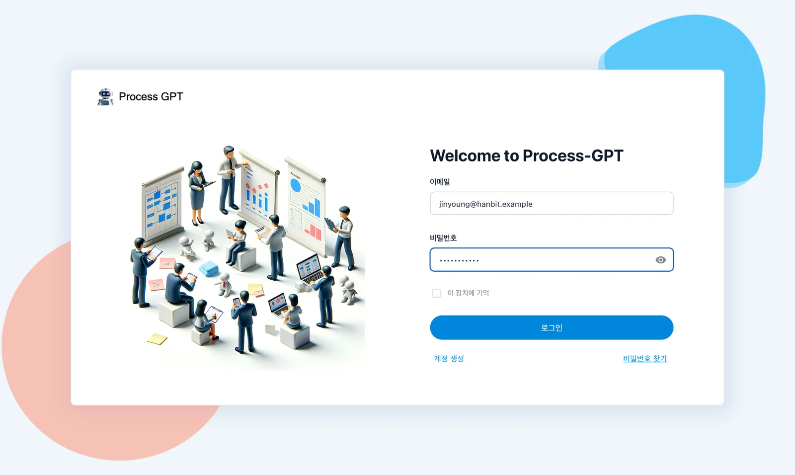

내 컴퓨터에 Process GPT를 Docker로 설치하고, http://localhost:8088 에서 첫 계정을 만들어 관리자로 로그인합니다. 처음 가입한 사람이 이 회사(설치본)의 관리자가 됩니다.
무엇을 설치하나#
Process GPT는 여러 서비스로 되어 있습니다. 설치 저장소 process-gpt-infra-docker 하나로 모두 받아 띄웁니다.
| 서비스 | 하는 일 |
|---|---|
| frontend · nginx | 화면과 입구(http://localhost:8088) |
| Supabase(db, auth, rest, storage …) | 데이터베이스·로그인·파일 |
| completion · polling-service | 프로세스 실행 엔진 |
| deepagents | 「딥 에이전트」 — 문서를 읽고 프로세스·에이전트를 만드는 AI |
| memento | 지식 베이스(문서 저장·검색) |
| bpmn-extractor | 문서(PDF)를 프로세스로 바꾸는 변환기 |
이 튜토리얼이 쓰는 버전
튜토리얼의 화면은 설치 저장소와 각 서비스의 수정 브랜치를 반영한 설치본에서 찍었습니다. 수정이 기본 브랜치에 들어가기 전까지는 설치 저장소의 fix/fresh-install 브랜치를 씁니다. 반영 상태는 이 튜토리얼의 수정 목록에서 봅니다.
준비#
| 항목 | 내용 |
|---|---|
| Docker | Docker Desktop(macOS·Windows) 또는 Docker Engine(Linux). Docker에 메모리 12GB 이상을 줍니다 |
| Git | 저장소를 받습니다 |
| OpenAI API 키 | 채팅·문서 검색에 씁니다. platform.openai.com에서 만듭니다 |
| 디스크 | 이미지와 데이터로 여유 70GB 이상 |
Apple Silicon Mac
서비스 이미지 대부분이 Intel(amd64)용이라 Docker Desktop의 「Use Rosetta for x86/amd64 emulation」을 켜 둡니다(설정 › General). 설치 저장소가 이미지마다 플랫폼을 정해 두었으므로 따로 할 일은 없습니다.
따라 하기 1 — 받고 설정하기#
터미널에서 차례로 붙여 넣습니다.
git clone https://github.com/uengine-oss/process-gpt-infra-docker.git
cd process-gpt-infra-docker
git checkout fix/fresh-install
cp .env.example .env
.env를 편집기로 열어 맨 위 네 줄을 OpenAI로 바꿉니다. sk-… 자리에 내 키를 넣습니다.
LLM_MODEL=gpt-4.1
LLM_PROXY_URL=https://api.openai.com/v1
LLM_PROXY_API_KEY=sk-…
OPENAI_API_KEY=sk-…
기본값을 꼭 바꾸세요
.env.example의 기본값은 개발팀이 쓰는 바깥 LLM 서버를 가리킵니다. 그대로 두면 채팅 내용이 그 서버로 갑니다. 위 네 줄을 내 OpenAI 키로 바꾼 뒤 실행합니다. 키는 .env에만 두고 다른 곳에 붙여 넣지 않습니다.
따라 하기 2 — 딥 에이전트의 작업 공간 열기#
딥 에이전트는 프로세스 파일을 만들 때 Docker로 작은 작업 컨테이너(샌드박스)를 띄웁니다. 그러려면 deepagents 서비스가 내 컴퓨터의 Docker에 닿아야 합니다. 같은 폴더에 docker-compose.override.yml 파일을 아래 내용으로 만듭니다.
services:
deepagents:
volumes:
- deepagents-workspace:/app/workspace
- /var/run/docker.sock:/var/run/docker.sock
volumes:
deepagents-workspace:
Docker 소켓 연결은 내 컴퓨터에서만
/var/run/docker.sock을 연결하면 deepagents 컨테이너가 내 컴퓨터의 Docker를 다룰 수 있습니다. 실습용 내 컴퓨터에서만 이렇게 하고, 여럿이 쓰는 서버에는 하지 않습니다. 이 파일이 없으면 딥 에이전트가 「샌드박스를 사용할 수 없습니다」라며 프로세스 파일을 만들지 못합니다(12장).
따라 하기 3 — 띄우기#
./start-all-services.sh frontend completion polling-service memento bpmn-extractor
처음에는 이미지를 받느라 수십 분이 걸립니다. 받은 뒤 다시 띄우면 1분 안쪽입니다. 런처는 데이터베이스와 로그인 서비스를 먼저 띄우고, 화면이 쓰는 표를 만든 뒤(db-migrate), 마지막에 입구(nginx)를 엽니다. 이름을 적지 않은 서비스(deepagents 등)도 필요한 것은 함께 뜹니다.
끄고 다시 켜기
./stop-all-services.sh로 끄고, 같은 ./start-all-services.sh … 명령으로 다시 켭니다. 데이터는 남습니다. 처음부터 다시 하려면 ./stop-all-services.sh --wipe 뒤에 띄웁니다(모든 데이터가 지워집니다).
따라 하기 4 — 첫 가입과 로그인#
- 브라우저로 http://localhost:8088 을 엽니다. Process GPT 소개 화면이 뜹니다.
- 가운데 파란 「사용해 보기」를 누르면 로그인 화면이 열립니다.
- 아래쪽 「계정 생성」을 누르고 이름·이메일·비밀번호를 적어 「회원가입」을 누릅니다. 이 튜토리얼에서는 영업팀장 장진영(
jinyoung@hanbit.example)으로 가입합니다. - “회원가입에 성공했습니다”가 뜨며 바로 로그인되어 프로세스 체계도가 열립니다. 사이드바 아래에 내 이름과 Admin이 보이면 설치와 가입이 끝난 것입니다.
- 다음부터는 로그인 화면에서 같은 이메일과 비밀번호로 들어옵니다.




이메일은 확인하지 않습니다
로컬 설치본은 메일을 보내지 않으므로, 가입할 때 쓰는 이메일은 실제로 받을 수 있는 주소가 아니어도 됩니다. 단 @ 뒤에 점이 있는 형식(이름@회사.example)이어야 합니다. 처음 가입한 사람은 관리자, 그 뒤에 같은 주소에서 가입한 사람은 이 회사의 일반 사용자가 됩니다(18장).
다음 장으로#
설치와 가입이 끝났습니다. 다음 장에서는 화면을 한 바퀴 돌며 어디서 무엇을 하는지 익힙니다(2장).
확인 문제
.env에서 꼭 바꿔야 하는 네 줄은 무엇이고, 바꾸지 않으면 어떻게 되나요?docker-compose.override.yml이 없으면 무엇이 안 되나요?- 같은 설치본에 두 번째로 가입한 사람은 관리자인가요?
답
LLM_MODEL,LLM_PROXY_URL,LLM_PROXY_API_KEY,OPENAI_API_KEY. 그대로 두면 채팅이 개발팀의 바깥 LLM 서버로 갑니다. 내 OpenAI 키와https://api.openai.com/v1로 바꿉니다.- 딥 에이전트가 작업 컨테이너(샌드박스)를 띄우지 못해, 프로세스 파일을 만드는 일(12장)이 「샌드박스를 사용할 수 없습니다」로 멈춥니다.
- 아닙니다. 처음 가입한 사람만 관리자이고, 두 번째부터는 일반 사용자로 들어옵니다.